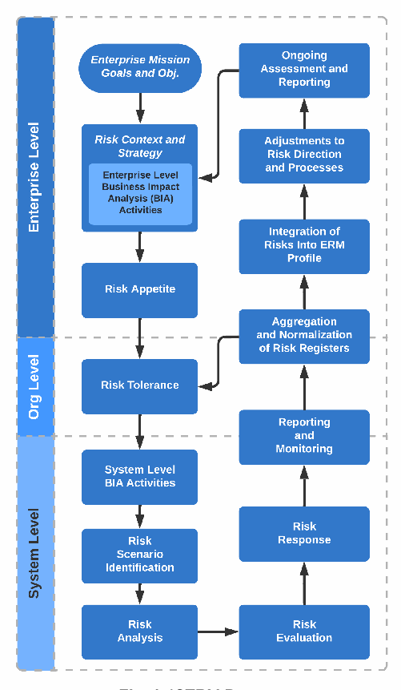
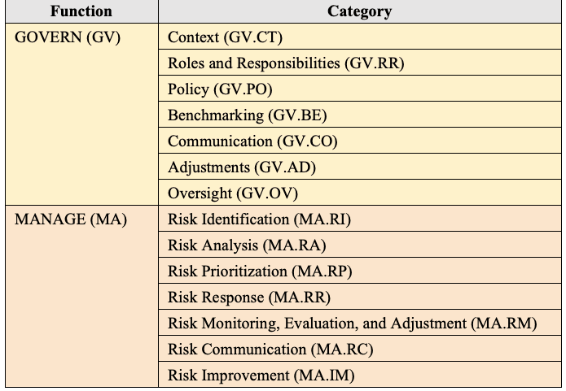
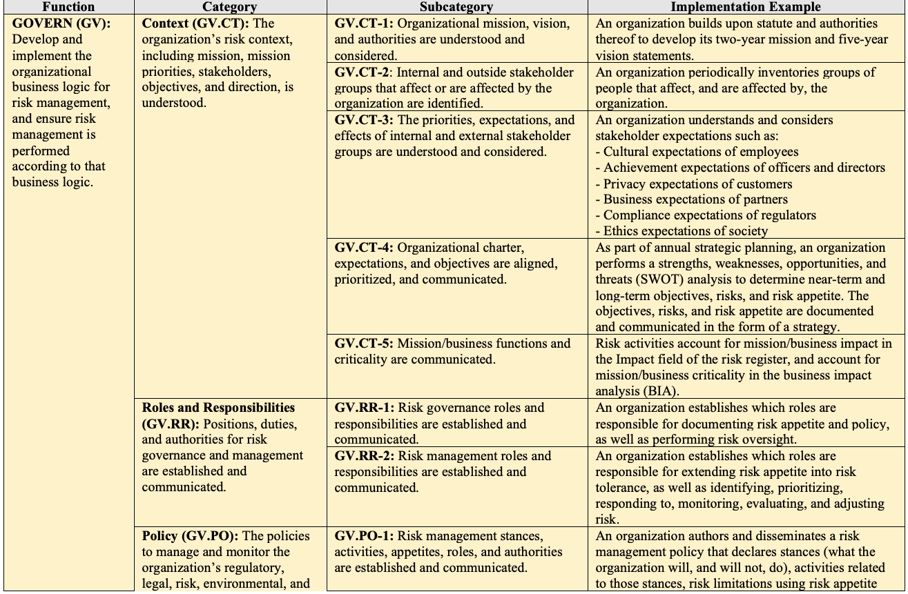
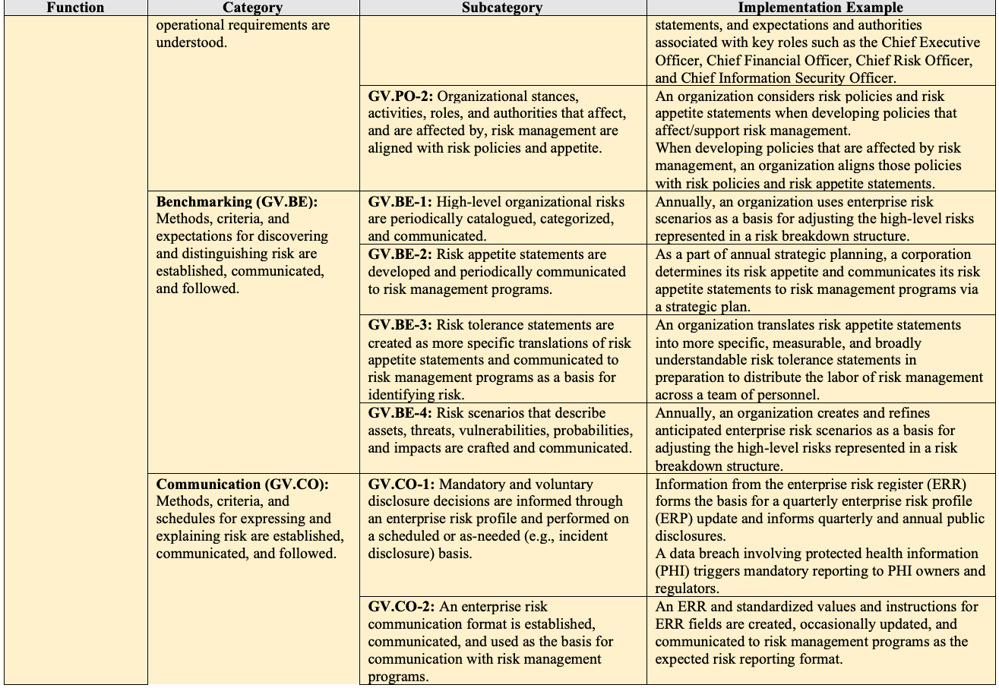
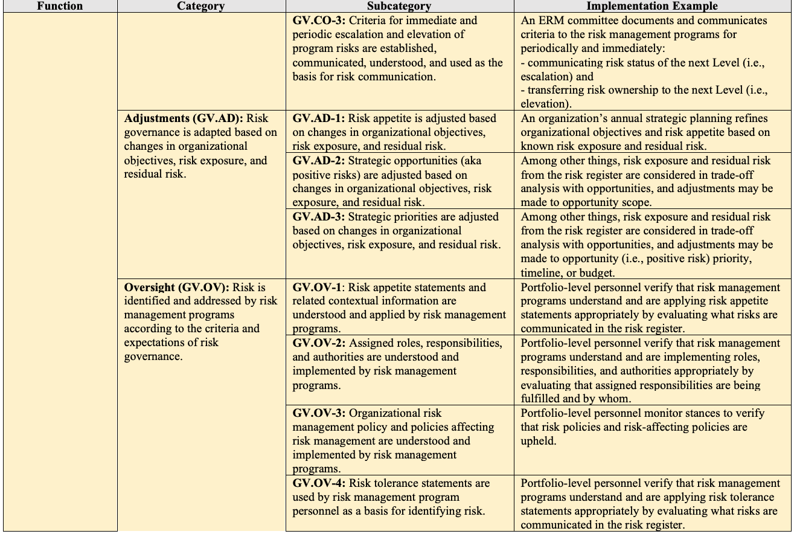
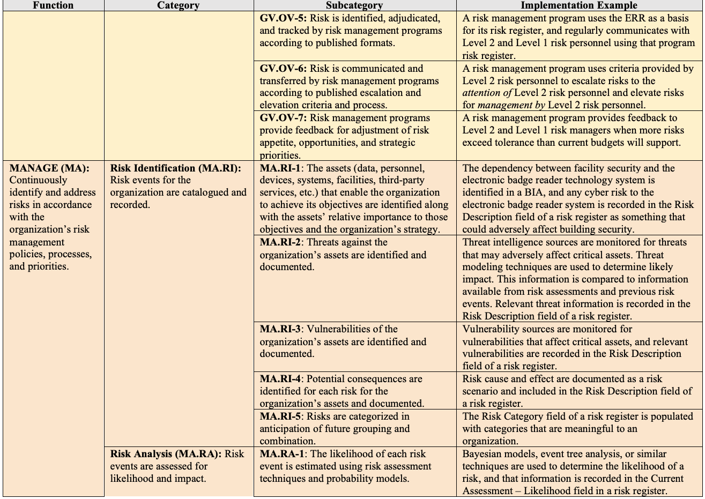
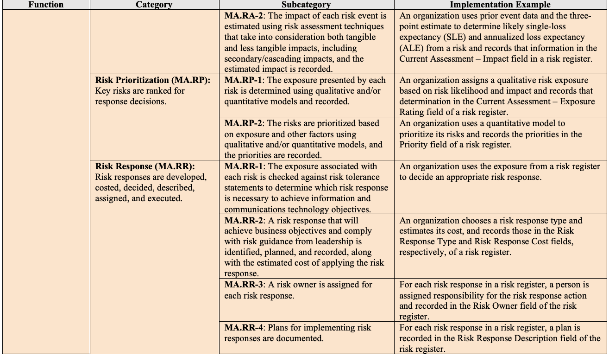
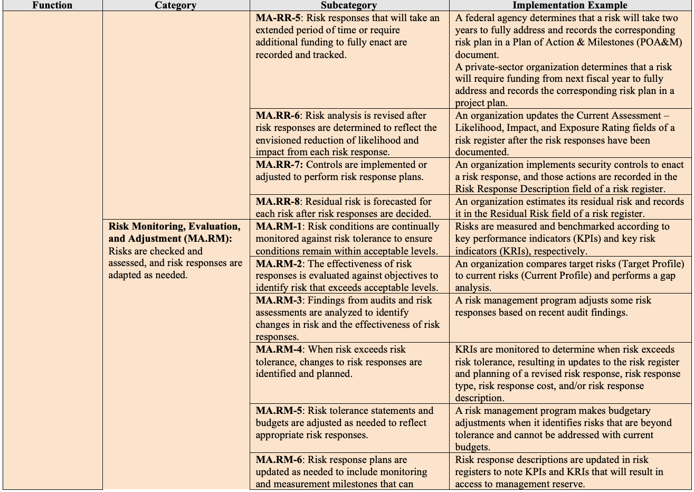
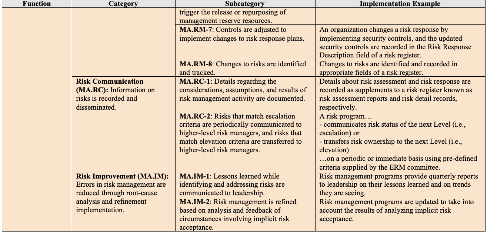

NIST Special Publication · PDF 原文抽出
Information and Communications Technology (ICT) Risk Outcomes: Integrating ICT Risk Management Programs with the Enterprise Risk Portfolio
情報通信技術（ICT）リスクの成果：エンタープライズリスクポートフォリオへのICTリスク管理プログラムの統合
NIST SP 800-221A（Information and Communications Technology (ICT) Risk Outcomes: Integrating ICT Risk Management Programs with the Enterprise Risk Portfolio）の英文と日本語訳を段落ごとに並べた閲覧用ページです。サイバーセキュリティ、プライバシー、サプライチェーンなど、ICTリスク全般に適用する成果フレームワークを示します。 翻訳は有志による非公式のもので、NIST および米国商務省が作成・承認・推奨したものではありません。要件の確認にはNIST の正式版 PDFを参照してください。
PDF から抽出した原文は原本との照合待ちです。
本文の数式はLaTeXの構造からKaTeXで表示しています。
NIST Special Publication
NIST特別刊行物
NIST SP 800-221A
NIST SP 800-221A
Information and Communications Technology (ICT) Risk Outcomes
情報通信技術（ICT）リスクの成果
Integrating ICT Risk Management Programs with the
ICTリスク管理プログラムを次と統合する：
Enterprise Risk Portfolio
エンタープライズリスクポートフォリオ
Stephen Quinn
Nahla Ivy
Julie Chua
Karen Scarfone
Matthew Barrett
Larry Feldman
Daniel Topper
Greg Witte
R. K. Gardner
Stephen Quinn
Nahla Ivy
Julie Chua
Karen Scarfone
Matthew Barrett
Larry Feldman
Daniel Topper
Greg Witte
R. K. Gardner
This publication is available free of charge from: https://doi.org/10.6028/NIST.SP.800-221A
本刊行物は、https://doi.org/10.6028/NIST.SP.800-221A から無料で入手できる。
NIST Special Publication
NIST特別刊行物
NIST SP 800-221A
NIST SP 800-221A
Information and Communications Technology (ICT) Risk Outcomes
情報通信技術（ICT）リスクの成果
Integrating ICT Risk Management Programs with the
ICTリスク管理プログラムを次と統合する：
Enterprise Risk Portfolio
エンタープライズリスクポートフォリオ
Stephen Quinn
Stephen Quinn
Karen Scarfone
Karen Scarfone
Applied Cybersecurity Division
応用サイバーセキュリティ部門
Scarfone Cybersecurity
Scarfone Cybersecurity
Information Technology Laboratory
情報技術研究所
Matthew Barrett
Matthew Barrett
Nahla Ivy
Nahla Ivy
CyberESI Consulting Group, Inc.
CyberESI Consulting Group, Inc.
Enterprise Risk Management Office
Office of Financial Resource Management
エンタープライズリスク管理室
財務資源管理局
Larry Feldman
Daniel Topper
Larry Feldman
Daniel Topper
Julie Chua
Julie Chua
Greg Witte
Greg Witte
Office of Information Security
情報セキュリティ室
Office of the Chief Information Officer (OCIO)
最高情報責任者室（OCIO）
Huntington Ingalls Industries
Huntington Ingalls Industries
U.S. Department of Health and Human Services
米国保健福祉省
R. K. Gardner
R. K. Gardner
New World Technology Partners
New World Technology Partners
This publication is available free of charge from: https://doi.org/10.6028/NIST.SP.800-221A
本刊行物は、https://doi.org/10.6028/NIST.SP.800-221A から無料で入手できる。
November 2023
2023年11月
［米国商務省の紋章。公的な標章のため、この非公式サイトには掲載していない。原本 PDF を参照。］
U.S. Department of Commerce Gina M. Raimondo, Secretary
米国商務省 Gina M. Raimondo（長官）
National Institute of Standards and Technology
米国国立標準技術研究所（NIST）
Laurie E. Locascio, NIST Director and Under Secretary of Commerce for Standards and Technology
Laurie E. Locascio（NIST所長兼商務省標準技術担当次官）
Certain commercial entities, equipment, or materials may be identified in this document in order to describe an experimental procedure or concept adequately. Such identification is not intended to imply recommendation or endorsement by the National Institute of Standards and Technology (NIST), nor is it intended to imply that the entities, materials, or equipment are necessarily the best available for the purpose.
実験手順または概念を十分に説明するため、この文書で特定の商業事業体、機器、または材料に言及することがある。そのような言及は、米国国立標準技術研究所（NIST）による推奨または保証を意味するものではなく、また、当該事業体、材料、機器が目的に対して必ずしも最良であることを意味するものでもない。
There may be references in this publication to other publications currently under development by NIST in accordance with its assigned statutory responsibilities. The information in this publication, including concepts and methodologies, may be used by federal agencies even before the completion of such companion publications. Thus, until each publication is completed, current requirements, guidelines, and procedures, where they exist, remain operative. For planning and transition purposes, federal agencies may wish to closely follow the development of these new publications by NIST.
本刊行物では、NISTが割り当てられた法定責務に従って現在策定中の他の刊行物を参照している場合がある。本刊行物に含まれる概念や方法論を含む情報は、関連刊行物の完成前であっても連邦機関が利用してよい。したがって、各刊行物が完成するまでは、既存の要件、ガイドライン、手順が存在する場合には、それらが引き続き有効である。計画および移行のため、連邦機関はNISTによる新刊行物の策定状況を注意深く追うことが望ましい。
Organizations are encouraged to review all draft publications during public comment periods and provide feedback to NIST. Many NIST cybersecurity publications, other than the ones noted above, are available at https://csrc.nist.gov/publications.
各組織は、パブリックコメント期間中にすべての草案を確認し、NISTにフィードバックを提供することが推奨される。上記で示したものを除き、NISTのサイバーセキュリティ刊行物の多くは、https://csrc.nist.gov/publications から入手できる。
Authority
This publication has been developed by NIST in accordance with its statutory responsibilities under the Federal Information Security Modernization Act (FISMA) of 2014, 44 U.S.C. § 3551 et seq., Public Law (P.L.) 113-283. NIST is responsible for developing information security standards and guidelines, including minimum requirements for federal information systems, but such standards and guidelines shall not apply to national security systems without the express approval of appropriate federal officials exercising policy authority over such systems. This guideline is consistent with the requirements of the Office of Management and Budget (OMB) Circular A-130.
権限
本刊行物は、2014年連邦情報セキュリティ近代化法（FISMA）、44 U.S.C. § 3551以下、Public Law（P.L.）113-283に基づくNISTの法定責務に従って作成された。NISTは、連邦情報システムの最低要件を含む情報セキュリティ標準およびガイドラインの策定を担う。ただし、これらの標準およびガイドラインは、当該システムに関する政策権限を行使する適切な連邦当局者の明示的な承認がない限り、国家安全保障システムに適用してはならない。本ガイドラインは、行政管理予算局（OMB）回章A-130の要件と整合している。
Nothing in this publication should be taken to contradict the standards and guidelines made mandatory and binding on federal agencies by the Secretary of Commerce under statutory authority. Nor should these guidelines be interpreted as altering or superseding the existing authorities of the Secretary of Commerce, Director of the OMB, or any other federal official. This publication may be used by nongovernmental organizations on a voluntary basis and is not subject to copyright in the United States. Attribution would, however, be appreciated by NIST.
本刊行物のいかなる内容も、法定権限に基づき商務長官が連邦機関に義務付け、拘束力を持たせた標準およびガイドラインに矛盾すると解釈してはならない。また、本ガイドラインは、商務長官、OMB長官、その他の連邦当局者が有する既存の権限を変更または置き換えるものと解釈してはならない。本刊行物は非政府組織が任意に利用でき、米国内で著作権の対象ではない。ただし、NISTへの出典表示を歓迎する。
NIST Technical Series Policies
Copyright, Fair Use, and Licensing Statements
NIST Technical Series Publication Identifier Syntax
NIST技術シリーズの方針
著作権・公正利用・ライセンスに関する声明
NIST技術シリーズ刊行物の識別子の表記形式
Publication History
Approved by the NIST Editorial Review Board on 2023-10-18
刊行履歴
2023年10月18日にNIST編集審査委員会が承認した。
How to Cite this NIST Technical Series Publication:
Quinn S, Ivy N, Chua J, Scarfone K, Barrett M, Feldman L, Topper D, Witte G, Gardner RK (2023) Information and Communications Technology (ICT) Risk Outcomes: Integrating ICT Risk Management Programs with the Enterprise Risk Portfolio. (National Institute of Standards and Technology, Gaithersburg, MD), NIST Special Publication (SP) NIST SP 800-221A. https://doi.org/10.6028/NIST.SP.800-221A
本NIST技術シリーズ刊行物の引用方法：
Quinn S、Ivy N、Chua J、Scarfone K、Barrett M、Feldman L、Topper D、Witte G、Gardner RK（2023）『情報通信技術（ICT）リスクの成果：エンタープライズリスクポートフォリオへのICTリスク管理プログラムの統合』（米国国立標準技術研究所、メリーランド州ゲイザースバーグ）、NIST特別刊行物（SP）NIST SP 800-221A。https://doi.org/10.6028/NIST.SP.800-221A
Author ORCID iDs
Stephen D. Quinn: 0000-0003-1436-684X
Nahla Ivy: 0000-0003-4741-422X
Karen Scarfone: 0000-0001-6334-9486
Matthew Barrett: 0000-0002-7689-427X
Larry Feldman: 0000-0003-3888-027X
Daniel Topper: 0000-0003-2612-7547
Gregory A. Witte: 0000-0002-5425-1097
著者のORCID iD
Stephen D. Quinn：0000-0003-1436-684X
Nahla Ivy：0000-0003-4741-422X
Karen Scarfone：0000-0001-6334-9486
Matthew Barrett：0000-0002-7689-427X
Larry Feldman：0000-0003-3888-027X
Daniel Topper：0000-0003-2612-7547
Gregory A. Witte：0000-0002-5425-1097
Contact Information ictrm@nist.gov
連絡先 ictrm@nist.gov
National Institute of Standards and Technology Attn: Applied Cybersecurity Division, Information Technology Laboratory 100 Bureau Drive (Mail Stop 8930) Gaithersburg, MD 20899-8930
米国国立標準技術研究所 宛先：応用サイバーセキュリティ部門、情報技術研究所 100 Bureau Drive（Mail Stop 8930） Gaithersburg, MD 20899-8930
All comments are subject to release under the Freedom of Information Act (FOIA)
すべてのコメントは、情報公開法（FOIA）に基づく公開の対象である。
Abstract
要旨
The increasing frequency, creativity, and severity of technology attacks means that all enterprises should ensure that information and communications technology (ICT) risk is receiving appropriate attention within their enterprise risk management (ERM) programs. Specific types of ICT risk include, but are not limited to, cybersecurity, privacy, and supply chain. This document provides a framework of outcomes that applies to all types of ICT risk. It complements NIST Special Publication (SP) 800-221, Enterprise Impact of Information and Communications Technology Risk, which focuses on the use of risk registers to communicate and manage ICT risk.
テクノロジー攻撃の頻度、巧妙さ、深刻さが増しているため、あらゆる企業は、エンタープライズリスク管理（ERM）プログラムにおいて情報通信技術（ICT）リスクが適切に扱われるようにすべきである。ICTリスクには、サイバーセキュリティ、プライバシー、サプライチェーンなどが含まれるが、これらに限られない。本書は、あらゆる種類のICTリスクに適用できる成果フレームワークを示す。ICTリスクの伝達と管理にリスク登録簿を用いることに焦点を当てたNIST特別刊行物（SP）800-221『情報通信技術リスクの企業への影響』を補完する。
Keywords
キーワード
enterprise risk management (ERM); enterprise risk profile (ERP); enterprise risk register (ERR); information and communications technology (ICT); ICT risk; ICT risk management (ICTRM); ICT risk measurement; ICT Risk Outcomes Framework (ICT ROF); risk appetite; risk register; risk tolerance.
エンタープライズリスク管理（ERM）、エンタープライズリスクプロファイル（ERP）、エンタープライズリスク登録簿（ERR）、情報通信技術（ICT）、ICTリスク、ICTリスク管理（ICTRM）、ICTリスク測定、ICTリスク成果フレームワーク（ICT ROF）、リスク選好、リスク登録簿、リスク許容度。
Reports on Computer Systems Technology
コンピュータシステム技術に関する報告書
The Information Technology Laboratory (ITL) at the National Institute of Standards and Technology (NIST) promotes the U.S. economy and public welfare by providing technical leadership for the Nation’s measurement and standards infrastructure. ITL develops tests, test methods, reference data, proof of concept implementations, and technical analyses to advance the development and productive use of information technology. ITL’s responsibilities include the development of management, administrative, technical, and physical standards and guidelines for the cost-effective security and privacy of other than national security-related information in federal information systems. The Special Publication 800-series reports on ITL’s research, guidelines, and outreach efforts in information system security, and its collaborative activities with industry, government, and academic organizations.
米国国立標準技術研究所（NIST）の情報技術研究所（ITL）は、国の計量・標準基盤に技術的リーダーシップを発揮し、米国経済と公共福祉の向上を推進している。ITLは、情報技術の発展と生産的な利用を促進するため、試験、試験方法、参照データ、概念実証実装、技術分析を開発する。ITLの責務には、連邦情報システムにおける国家安全保障関連以外の情報について、費用対効果の高いセキュリティとプライバシーを実現するための管理面、運用面、技術面、物理面の標準およびガイドラインの策定が含まれる。特別刊行物800シリーズは、情報システムセキュリティに関するITLの研究、ガイドライン、普及活動、および産業界、政府、学術機関との共同活動を報告する。
Audience
対象読者
The primary audience for this publication includes both Federal Government and non-Federal Government professionals at all levels who understand ICT but may be unfamiliar with the details of ERM. The secondary audience includes both Federal and non-Federal Government corporate officers, high-level executives, ERM officers and staff members, and others who understand ERM but may be unfamiliar with the details of ICT.
主な対象読者は、ICTを理解しているもののERMの詳細には不慣れな、連邦政府および連邦政府以外のあらゆる階層の専門家である。副次的な対象読者は、ERMを理解しているもののICTの詳細には不慣れな、連邦政府および連邦政府以外の企業役員、高級幹部、ERM担当者・職員などである。
Acknowledgments
謝辞
The authors wish to thank all individuals, organizations, and enterprises that contributed to the creation of this document. This includes Jim Foti, Amy Mahn, Matt Scholl, Kevin Stine, and Isabel Van Wyk of NIST and Mat Heyman of Impresa Management Solutions. The authors appreciate the support of the United States Department of Health and Human Services and the Federal Cyber-ERM Community of Interest, including the following members who provided specific comments: Cedric Carter Jr., L. Dix, Ken Hong Fong, Kim Isaac, Z. Kaptaine, Nnake Nweke, Khairun Pannah, Katherine Polevitzky, Thom Richison, Nicole Rohloff, C. Rosu, Stephanie Saravia, M. Sawyer, and Angelica Stanley. The authors also thank Joel Crook of Consolidated Nuclear Security, LLC; Justin Perkins of CTIA; Kelly Hood of Optic Cyber Solutions; and Matthew Smith of Seemless Transition, LLC; and individual commenters Simon Burson and Chuck Shriver.
著者らは、本書の作成に貢献したすべての個人、組織、企業に感謝する。これには、NISTのJim Foti、Amy Mahn、Matt Scholl、Kevin Stine、Isabel Van Wyk、およびImpresa Management SolutionsのMat Heymanが含まれる。また、米国保健福祉省および連邦Cyber-ERM関心共同体の支援にも感謝する。具体的なコメントを提供した同共同体のメンバーは、Cedric Carter Jr.、L. Dix、Ken Hong Fong、Kim Isaac、Z. Kaptaine、Nnake Nweke、Khairun Pannah、Katherine Polevitzky、Thom Richison、Nicole Rohloff、C. Rosu、Stephanie Saravia、M. Sawyer、Angelica Stanleyである。また、Consolidated Nuclear Security, LLCのJoel Crook、CTIAのJustin Perkins、Optic Cyber SolutionsのKelly Hood、Seemless Transition, LLCのMatthew Smith、個人としてコメントを寄せたSimon BursonとChuck Shriverにも感謝する。
未レビュー訳Document Conventions
文書の表記規則
For the purposes of this publication, “assets” are defined as technologies that may compose an information or communications system. The term “asset” or “assets” is used in multiple frameworks and documents. Examples include laptop computers, desktop computers, servers, sensors, data, mobile phones, tablets, routers, and switches. In instances where the authors mean “assets” as they appear on a balance sheet, the word “asset” will be preceded by words such as “high-level,” “balance sheet,” or “Level 1” to differentiate context.
本刊行物では、「資産」を情報システムまたは通信システムを構成する可能性のある技術と定義する。「資産」という語は複数のフレームワークや文書で使われている。例として、ノートPC、デスクトップPC、サーバー、センサー、データ、携帯電話、タブレット、ルーター、スイッチがある。貸借対照表上の「資産」を指す場合は、文脈を区別するため「高位レベル」「貸借対照表上の」「レベル1」などの語を「資産」の前に付ける。
Patent Disclosure Notice
特許開示に関する通知
NOTICE: ITL has requested that holders of patent claims whose use may be required for compliance with the guidance or requirements of this publication disclose such patent claims to ITL. However, holders of patents are not obligated to respond to ITL calls for patents and ITL has not undertaken a patent search in order to identify which, if any, patents may apply to this publication. As of the date of publication and following call(s) for the identification of patent claims whose use may be required for compliance with the guidance or requirements of this publication, no such patent claims have been identified to ITL. No representation is made or implied by ITL that licenses are not required to avoid patent infringement in the use of this publication.
通知：ITLは、本刊行物の指針または要件への準拠に使用が必要となる可能性のある特許請求項について、その権利者にITLへの開示を求めている。ただし、特許権者にはITLの特許情報提供要請に応じる義務はなく、ITLも本刊行物に適用される可能性がある特許を特定するための特許調査を実施していない。刊行日時点で、該当する可能性のある特許請求項の特定を要請した後も、そのような特許請求項はITLに申告されていない。本刊行物を利用する際に特許侵害を避けるためのライセンスが不要であると、ITLが表明または示唆するものではない。
Table of Contents
目次
Introduction — 1
はじめに — 1
1.1 Purpose and Scope — 1
1.1 目的と適用範囲 — 1
1.2 Publication Contents — 1
1.2 刊行物の構成 — 1
Information and Communications Technology Areas — 2
情報通信技術の領域 — 2
ICT Risk Outcomes Framework (ROF) — 3
ICTリスク成果フレームワーク（ROF）— 3
References — 12
参考文献 — 12
Appendix A. List of Symbols, Abbreviations, and Acronyms — 13
付録A. 記号、略語、頭字語一覧 — 13
List of Tables
表一覧
Table 1. Function and Category Unique Identifiers — 4
表1. 機能およびカテゴリの一意識別子 — 4
Table 2. ICT Risk Outcomes Framework — 5
表2. ICTリスク成果フレームワーク — 5
List of Figures
図一覧
Fig. 1. ICTRM Process — 2
図1. ICTRMプロセス — 2
1. Introduction
1. はじめに
The increasing frequency, creativity, and severity of attacks against technology means that all enterprises should ensure that information and communications technology (ICT) risk is receiving appropriate attention within their enterprise risk management (ERM) programs. Specific types of ICT risk include, but are not limited to, cybersecurity, privacy, supply chain, and artificial intelligence risk.
テクノロジーに対する攻撃の頻度、巧妙さ、深刻さが増しているため、すべての企業は、エンタープライズリスク管理（ERM）プログラムにおいて情報通信技術（ICT）リスクが適切に扱われるようにすべきである。ICTリスクには、サイバーセキュリティ、プライバシー、サプライチェーン、人工知能のリスクなどが含まれるが、これらに限られない。
1.1 Purpose and Scope
1.1 目的と適用範囲
This document provides a framework of outcomes that applies to all types of ICT risk. It complements NIST Special Publication (SP) 800-221, Enterprise Impact of Information and Communications Technology Risk [SP800221], which focuses on the use of risk registers to communicate and manage ICT risk. Before reading this publication, you should first read NIST SP 800-221 so that you understand the concepts and context for the information contained in the framework of outcomes. NIST has already defined outcome-based frameworks for several types of ICT risk, including the Cybersecurity Framework [CSF], the Privacy Framework [PF], and the Secure Software Development Framework [SSDF]. The outcomes in those frameworks are effectively more specific instances of the outcomes in the more general framework defined in this publication.
本書は、あらゆる種類のICTリスクに適用できる成果フレームワークを示す。ICTリスクの伝達と管理にリスク登録簿を用いることに焦点を当てたNIST特別刊行物（SP）800-221『情報通信技術リスクの企業への影響』[SP800221]を補完する。本刊行物を読む前に、成果フレームワークに含まれる情報の概念と文脈を理解するため、まずNIST SP 800-221を読むことが望まれる。NISTは、サイバーセキュリティフレームワーク（CSF）、プライバシーフレームワーク（PF）、セキュアソフトウェア開発フレームワーク（SSDF）など、複数種類のICTリスクについて、すでに成果ベースのフレームワークを定義している。これらのフレームワークの成果は、本刊行物が定めるより一般的なフレームワークに含まれる成果を、より具体化したものである。
1.2 Publication Contents
1.2 刊行物の構成
The remainder of this publication is organized into the following major sections:
本刊行物の残りの部分は、次の主要な節で構成されている。
•Section 2 provides an overview of ICT processes as a context for ERM.
•第2節では、ERMの背景としてICTプロセスの概要を示す。
•Section 3 defines the framework of ICT risk outcomes and explains the significance of each field within the framework.
•第3節では、ICTリスク成果のフレームワークを定義し、フレームワーク内の各フィールドの意義を説明する。
•The References section defines the references cited in this publication.
•参考文献の節では、本刊行物で引用した文献を示す。
•Appendix A contains acronyms used in the publication.
•付録Aには、本刊行物で使用する略語を記載する。
2. Information and Communications Technology Areas
2. 情報通信技術の領域
ERM is the highest terminus of ICT risk management (ICTRM). As with NIST SP 800-221, the processes described within this publication focus on ICTRM within, between, and across ICT areas. ICTRM helps ensure that leaders and stakeholders are supported by a holistic risk risk monitoring and communication model, which is needed for the complexity of risks at the enterprise level. An ICT Risk Outcomes Framework (ROF) is needed to support ICT risk escalation and elevation, as well as reduce ICTRM complexity. While the focus of many risk management program frameworks is the comprehensiveness of each program’s controls, the ICT ROF focuses on the comprehensiveness of overarching risk governance and management. Specifically, the ICT ROF enumerates distinct outcomes associated with the ICTRM process described in NIST SP 800-221 and illustrated in Fig. 1. The risk governance outcomes of the ICT ROF are meant to be applied at select levels in a given organization. Typically, risk governance will occur at the enterprise level, and may also occur at the organization level. The risk management outcomes of the ICT ROF may be applied at all levels in a given organization. The risk management outcomes are highly relevant to individual risk management programs and may be used alongside risk management program frameworks.
ERMは、ICTリスク管理（ICTRM）の最上位に位置する。NIST SP 800-221と同様に、本刊行物で説明するプロセスは、ICT領域内、領域間、領域横断のICTRMに焦点を当てる。ICTRMは、リーダーやステークホルダーが包括的なリスク監視・伝達モデルによって確実に支援されるようにする一助となる。このモデルは、エンタープライズレベルにおけるリスクの複雑さに対応するために必要である。ICTリスク成果フレームワーク（ROF）は、ICTRMの複雑さを軽減するとともに、ICTリスクのエスカレーションと上位への移管を支援する。多くのリスク管理プログラム用フレームワークは各プログラムの管理策を網羅することに重点を置くが、ICT ROFはリスクガバナンスと管理全体の網羅性に重点を置く。具体的には、NIST SP 800-221で説明され、図1に示すICTRMプロセスに関する個別の成果を列挙する。ICT ROFのリスクガバナンス成果は、組織内の特定の階層に適用することを意図している。通常、リスクガバナンスはエンタープライズレベルで行われ、組織レベルでも行われる場合がある。ICT ROFのリスク管理成果は組織内のすべての階層に適用できる。リスク管理成果は個々のリスク管理プログラムに特に関連し、リスク管理プログラム用フレームワークと併用できる。

図：エンタープライズレベル、組織レベル、システムレベルを通じたICTリスク管理プロセス。エンタープライズレベル：エンタープライズの使命目標と目的、リスク状況と戦略、事業影響分析（BIA）活動、リスク選好度、継続的な評価と報告、リスク方向性とプロセスの調整、エンタープライズリスク管理（ERM）プロファイルへのリスク統合、リスク登録簿の集約と正規化。組織レベル：リスク許容度、報告と監視。システムレベル：システムレベルのBIA活動、リスクシナリオの特定、リスク分析、リスク評価、リスク対応。
Fig. 1. ICTRM Process
図1. ICTRMプロセス
3. ICT Risk Outcomes Framework (ROF)
3. ICTリスク成果フレームワーク（ROF）
This section defines the ICT ROF, a framework for integrating ICT risk with enterprise risk. The ICT ROF is a set of desired outcomes and applicable references that are common across all types of ICT risk. It provides a common language for understanding, managing, and expressing ICT risk to internal and outside stakeholders. It can be used to help identify and prioritize actions for reducing ICT risk, and it is a tool for aligning policy, business, and technological approaches to managing that risk. Using the framework for each type of ICT risk will help organizations improve the quality and consistency of ICT risk information they provide as inputs to their ERM programs. That, in turn, will help organizations address all forms of ICT risk more effectively in their ERM. The ICT ROF is comprised of the following components:
本節では、ICTリスクをエンタープライズリスクに統合するためのフレームワークであるICT ROFを定義する。ICT ROFは、あらゆる種類のICTリスクに共通する望ましい成果と関連する参考情報の集合である。社内外のステークホルダーにICTリスクを理解、管理、伝達するための共通言語を提供する。ICTリスクを低減するための行動の特定と優先順位付けに利用でき、リスク管理に関する方針、事業、技術の各アプローチを整合させるツールにもなる。各種ICTリスクにこのフレームワークを適用すると、組織がERMプログラムへのインプットとして提供するICTリスク情報の品質と一貫性が向上する。その結果、ERMにおいてあらゆる形態のICTリスクにより効果的に対処できるようになる。ICT ROFは次の要素で構成される。
•Functions organize ICT risk outcomes at their highest level. There are two Functions:
•機能（Function）は、ICTリスク成果を最上位レベルで整理する。機能は2つある。
◦ Govern (GV): Develop and implement the organizational business logic for risk management, and ensure risk management is performed according to that business logic.
◦ Manage (MA): Continuously identify and address risks in accordance with the organization’s risk management policies, processes, and priorities.
◦ 統治（GOVERN、GV）：リスク管理に関する組織の事業上の論理を策定・実施し、それに従ってリスク管理が行われるようにする。
◦ 管理（MANAGE、MA）：組織のリスク管理方針、プロセス、優先事項に従い、リスクを継続的に特定し対処する。
•Categories are the subdivisions of a Function into groups of ICT risk outcomes closely tied to programmatic needs and particular activities. Examples of Categories include:
•カテゴリ（Category）は、機能を、プログラム上のニーズや特定の活動に密接に関連するICTリスク成果のグループに細分化したものである。カテゴリの例：
◦ Roles and Responsibilities (GV.RR)
◦ Risk Analysis (MA.RA)
◦ Risk Monitoring, Evaluation, and Adjustment (MA.RM)
◦ 役割と責任（GV.RR）
◦ リスク分析（MA.RA）
◦ リスクの監視、評価、調整（MA.RM）
•Subcategories further divide a Category into specific outcomes of technical and/or management activities. While not exhaustive, they help support achievement of the outcomes in each Category. Examples of Subcategories include:
•サブカテゴリ（Subcategory）は、カテゴリを技術面および／または管理面の活動に関する具体的な成果へさらに細分化する。網羅的ではないが、各カテゴリの成果達成を支援する。サブカテゴリの例：
◦ GV.RR-1: Risk governance roles and responsibilities are established and communicated.
◦ MA.RA-1: The likelihood of each risk event is estimated using risk assessment techniques and probability models.
◦ MA.RM-4: When risk exceeds risk tolerance, changes to risk responses are identified and planned.
◦ GV.RR-1：リスクガバナンスの役割と責任を定め、伝達する。
◦ MA.RA-1：各リスク事象の発生可能性を、リスク評価技法および確率モデルを用いて推定する。
◦ MA.RM-4：リスクが許容度を超えた場合、リスク対応の変更を特定し、計画する。
•Implementation Examples are one or more notional examples of how tools, processes, or other methods could be used to help achieve a Subcategory. No examples or combination of examples are required, and the stated examples are not the only feasible options. Some examples may not be applicable to certain organizations and situations. Examples of Implementation Examples include:
•実装例（Implementation Example）は、サブカテゴリの達成に役立つツール、プロセス、その他の方法の仮想的な使用例を1つ以上示す。例の実施や複数例の組み合わせは必須ではなく、提示した例だけが実行可能な方法でもない。組織や状況によっては、適用できない例もある。実装例の例：
◦ For GV.RR-1: An organization establishes which roles are responsible for documenting risk appetite and policy, as well as performing risk oversight.
◦ GV.RR-1の場合：組織が、リスク選好度と方針の文書化、およびリスク監督を担う役割を定める。
◦ For MA.RA-1: Bayesian models, event tree analysis, or similar techniques are used to determine the likelihood of a risk, and that information is recorded in the Current Assessment – Likelihood field in a risk register.
◦ For MA.RM-4: KRIs are monitored to determine when risk exceeds risk tolerance, resulting in updates to the risk register and planning of a revised risk response, risk response type, risk response cost, and/or risk response description.
◦ MA.RA-1の場合：リスクの発生可能性を、ベイズモデル、イベントツリー分析、または同様の技法で判断し、その情報をリスク登録簿の「現在の評価 — 発生可能性」フィールドに記録する。
◦ MA.RM-4の場合：KRIを監視し、リスクが許容度を超えた時点を判定する。その結果に応じてリスク登録簿を更新し、改訂したリスク対応、対応種別、対応コスト、および／または対応内容を計画する。
•Informative References are specific sections of standards, guidelines, and practices that illustrate methods to achieve the outcomes associated with each Subcategory. The Informative References are intended to be illustrative and not exhaustive. To avoid having to re-release this publication every time an Informative Reference is added or updated, Informative References are omitted from this publication. Instead, they will be held in NIST’s Online Informative References (OLIR) Catalog.
•参考情報（Informative References）は、各サブカテゴリに関連する成果を達成する方法を示す、標準、ガイドライン、慣行の具体的な節を指す。参考情報は例示を目的とし、網羅的ではない。参考情報を追加または更新するたびに本刊行物を再発行せずに済むよう、参考情報そのものは本刊行物に記載せず、NISTのオンライン参考情報（OLIR）カタログに収録する。
For ease of use, each Function, Category, and Subcategory is assigned a unique identifier. Table 1 lists the identifiers for the Functions and Categories to show the framework’s overall structure.
使いやすさのため、各機能、カテゴリ、サブカテゴリに一意の識別子を割り当てている。表1は、フレームワーク全体の構造を示すため、機能とカテゴリの識別子を列挙する。
Table 1. Function and Category Unique Identifiers
表1. 機能およびカテゴリの一意識別子
| Function | Category |
| GOVERN (GV) | Context (GV.CT) |
| Roles and Responsibilities (GV.RR) | |
| Policy (GV.PO) | |
| Benchmarking (GV.BE) | |
| Communication (GV.CO) | |
| Adjustments (GV.AD) | |
| Oversight (GV.OV) | |
| MANAGE (MA) | Risk Identification (MA.RI) |
| Risk Analysis (MA.RA) | |
| Risk Prioritization (MA.RP) | |
| Risk Response (MA.RR) | |
| Risk Monitoring, Evaluation, and Adjustment (MA.RM) | |
| Risk Communication (MA.RC) | |
| Risk Improvement (MA.IM) |
原本PDFの抜粋画像

| 機能 | カテゴリ |
| 統治（GV） | 状況（GV.CT） |
| 役割と責任（GV.RR） | |
| 方針（GV.PO） | |
| ベンチマーキング（GV.BE） | |
| コミュニケーション（GV.CO） | |
| 調整（GV.AD） | |
| 監督（GV.OV） | |
| 管理（MA） | リスクの特定（MA.RI） |
| リスク分析（MA.RA） | |
| リスクの優先順位付け（MA.RP） | |
| リスク対応（MA.RR） | |
| リスクの監視、評価、調整（MA.RM） | |
| リスク伝達（MA.RC） | |
| リスク改善（MA.IM） |
Table 2 defines the Functions, Categories, Subcategories, and Implementation Examples in the ICT ROF and is available for browsing and download at the Cybersecurity and Privacy Tool (CPRT) page. Table 2 includes only a subset of what an organization may need to do and achieve. The information in the table is space-constrained; much more information can be found from the Informative References in the NIST OLIR Catalog. Note that the order of the Functions, Categories, and Subcategories in the table is not intended to imply the sequence of implementation or the relative importance of any Function, Category, or Subcategory. Please note that Implementation Examples are offered to provide clarification of the Subcategory. The information in the Implementation Example field represents a way in which the Subcategory might be satisfied but is not exhaustive of all possible ways.
表2は、ICT ROFの機能、カテゴリ、サブカテゴリ、実装例を定義しており、サイバーセキュリティ・プライバシーツール（CPRT）ページで閲覧およびダウンロードできる。表2は、組織が実施・達成する必要のある事項の一部のみを掲載している。表の情報量には制約があるため、詳しい情報はNIST OLIRカタログの参考情報で確認できる。表内の機能、カテゴリ、サブカテゴリの順序は、実装順序や相対的重要度を示すものではない。実装例はサブカテゴリを明確にするために示している。実装例フィールドの情報は、サブカテゴリを満たす一つの方法であり、可能な方法をすべて網羅するものではない。
Table 2. ICT Risk Outcomes Framework
表2. ICTリスク成果フレームワーク
| Function | Category | Subcategory | Implementation Example |
| GOVERN (GV): | Context (GV.CT): The | GV.CT-1: Organizational mission, vision, | An organization builds upon statute and authorities |
| Develop and | organization’s risk context, | and authorities are understood and | thereof to develop its two-year mission and five-year |
| implement the | including mission, mission | considered. | vision statements. |
| organizational | priorities, stakeholders, | GV.CT-2: Internal and outside stakeholder | An organization periodically inventories groups of |
| business logic for | objectives, and direction, is | groups that affect or are affected by the | people that affect, and are affected by, the |
| risk management, | understood. | organization are identified. | organization. |
| and ensure risk | GV.CT-3: The priorities, expectations, and | An organization understands and considers | |
| management is | effects of internal and external stakeholder | stakeholder expectations such as: | |
| performed | groups are understood and considered. | -Cultural expectations of employees | |
| according to that | -Achievement expectations of officers and directors | ||
| business logic. | -Privacy expectations of customers | ||
| -Business expectations of partners | |||
| -Compliance expectations of regulators | |||
| -Ethics expectations of society | |||
| GV.CT-4: Organizational charter, | As part of annual strategic planning, an organization | ||
| expectations, and objectives are aligned, | performs a strengths, weaknesses, opportunities, and | ||
| prioritized, and communicated. | threats (SWOT) analysis to determine near-term and | ||
| long-term objectives, risks, and risk appetite. The | |||
| objectives, risks, and risk appetite are documented | |||
| and communicated in the form of a strategy. | |||
| GV.CT-5: Mission/business functions and | Risk activities account for mission/business impact in | ||
| criticality are communicated. | the Impact field of the risk register, and account for | ||
| mission/business criticality in the business impact | |||
| analysis (BIA). | |||
| Roles and Responsibilities | GV.RR-1: Risk governance roles and | An organization establishes which roles are | |
| (GV.RR): Positions, duties, | responsibilities are established and | responsible for documenting risk appetite and policy, | |
| and authorities for risk | communicated. | as well as performing risk oversight. | |
| governance and management | GV.RR-2: Risk management roles and | An organization establishes which roles are | |
| are established and | responsibilities are established and | responsible for extending risk appetite into risk | |
| communicated. | communicated. | tolerance, as well as identifying, prioritizing, | |
| responding to, monitoring, evaluating, and adjusting | |||
| risk. | |||
| Policy (GV.PO): The policies | GV.PO-1: Risk management stances, | An organization authors and disseminates a risk | |
| to manage and monitor the | activities, appetites, roles, and authorities | management policy that declares stances (what the | |
| organization’s regulatory, | are established and communicated. | organization will, and will not, do), activities related | |
| legal, risk, environmental, and | to those stances, risk limitations using risk appetite |
原本PDFの抜粋画像

| 機能 | カテゴリ | サブカテゴリ | 実装例 |
| 統治（GV）： | 状況（GV.CT）：組織の | GV.CT-1：組織の使命、ビジョン、 | 組織は、法令とその権限を基礎として、 |
| リスク管理のための | リスク状況（使命、使命上の | 権限が理解され、 | 2年間の使命声明と5年間の |
| 組織の | 優先事項、ステークホルダー、 | 検討されている。 | ビジョン声明を策定する。 |
| 事業上の論理を | 目的、方向性を含む）が | GV.CT-2：組織に影響を与える、または | 組織は、組織に影響を与える、または |
| 策定・実施し、 | 理解されている。 | 組織から影響を受ける、内部および外部の | 組織から影響を受ける人々のグループを |
| リスク管理が | ステークホルダーグループが特定されている。 | 定期的に一覧化する。 | |
| その事業上の | GV.CT-3：内部および外部の | 組織は、次のようなステークホルダーの | |
| 論理に従って | ステークホルダーグループの優先事項、期待、影響が | 期待を理解し、考慮する。 | |
| 実施される | 理解され、考慮されている。 | -従業員の文化に関する期待 | |
| ように | -役員および取締役の達成に関する期待 | ||
| する。 | -顧客のプライバシーに関する期待 | ||
| -取引先の事業上の期待 | |||
| -規制当局のコンプライアンスに関する期待 | |||
| -社会の倫理に関する期待 | |||
| GV.CT-4：組織の憲章、 | 年次戦略計画の一環として、組織は | ||
| 期待、目標が整合され、 | 強み、弱み、機会、 | ||
| 優先順位付けされ、伝達されている。 | 脅威（SWOT）の分析を実施して、短期および | ||
| 長期の目標、リスク、リスク選好度を決定する。 | |||
| 目標、リスク、リスク選好度は文書化され、 | |||
| 戦略の形で伝達される。 | |||
| GV.CT-5：使命／事業機能と | リスク関連活動は、使命／事業への影響を | ||
| その重要性が伝達されている。 | リスク登録簿の「影響」欄に反映し、使命／事業の | ||
| 重要性を事業影響分析（BIA）で | |||
| 考慮する。 | |||
| 役割と責任 | GV.RR-1：リスクガバナンスの役割と | 組織は、リスク選好度と方針の文書化、 | |
| （GV.RR）：リスクガバナンスと | 責任が確立され、 | ならびにリスク監督の実施を | |
| 管理のための職位、職務、 | 伝達されている。 | 担う役割を定める。 | |
| 権限が | GV.RR-2：リスク管理の役割と | 組織は、リスク選好度を | |
| 確立され、 | 責任が確立され、 | リスク許容度へ展開する役割、 | |
| 伝達されている。 | 伝達されている。 | ならびにリスクを特定し、優先順位を付け、 | |
| 対応、監視、評価、調整する | |||
| 役割を定める。 | |||
| 方針（GV.PO）： | GV.PO-1：リスク管理に関する姿勢、 | 組織は、次の事項を明示するリスク管理方針を作成し、周知する。 | |
| 組織の規制上、法務上、 | 活動、選好度、役割、権限が | 姿勢（組織が行うこと、行わないこと）、 | |
| リスク上、環境上、 | 確立され、伝達されている。 | その姿勢に関連する活動、 | |
| 運用上の要件を管理・監視する | リスク選好度声明を用いたリスク限度、 |
| Function | Category | Subcategory | Implementation Example |
| operational requirements are | statements, and expectations and authorities | ||
| understood. | associated with key roles such as the Chief Executive | ||
| Officer, Chief Financial Officer, Chief Risk Officer, | |||
| and Chief Information Security Officer. | |||
| GV.PO-2: Organizational stances, | An organization considers risk policies and risk | ||
| activities, roles, and authorities that affect, | appetite statements when developing policies that | ||
| and are affected by, risk management are | affect/support risk management. | ||
| aligned with risk policies and appetite. | When developing policies that are affected by risk | ||
| management, an organization aligns those policies | |||
| with risk policies and risk appetite statements. | |||
| Benchmarking (GV.BE): | GV.BE-1: High-level organizational risks | Annually, an organization uses enterprise risk | |
| Methods, criteria, and | are periodically catalogued, categorized, | scenarios as a basis for adjusting the high-level risks | |
| expectations for discovering | and communicated. | represented in a risk breakdown structure. | |
| and distinguishing risk are | GV.BE-2: Risk appetite statements are | As a part of annual strategic planning, a corporation | |
| established, communicated, | developed and periodically communicated | determines its risk appetite and communicates its risk | |
| and followed. | to risk management programs. | appetite statements to risk management programs via | |
| a strategic plan. | |||
| GV.BE-3: Risk tolerance statements are | An organization translates risk appetite statements | ||
| created as more specific translations of risk | into more specific, measurable, and broadly | ||
| appetite statements and communicated to | understandable risk tolerance statements in | ||
| risk management programs as a basis for | preparation to distribute the labor of risk management | ||
| identifying risk. | across a team of personnel. | ||
| GV.BE-4: Risk scenarios that describe | Annually, an organization creates and refines | ||
| assets, threats, vulnerabilities, probabilities, | anticipated enterprise risk scenarios as a basis for | ||
| and impacts are crafted and communicated. | adjusting the high-level risks represented in a risk | ||
| breakdown structure. | |||
| Communication (GV.CO): | GV.CO-1: Mandatory and voluntary | Information from the enterprise risk register (ERR) | |
| Methods, criteria, and | disclosure decisions are informed through | forms the basis for a quarterly enterprise risk profile | |
| schedules for expressing and | an enterprise risk profile and performed on | (ERP) update and informs quarterly and annual public | |
| explaining risk are established, | a scheduled or as-needed (e.g., incident | disclosures. | |
| communicated, and followed. | disclosure) basis. | A data breach involving protected health information | |
| (PHI) triggers mandatory reporting to PHI owners and | |||
| regulators. | |||
| GV.CO-2: An enterprise risk | An ERR and standardized values and instructions for | ||
| communication format is established, | ERR fields are created, occasionally updated, and | ||
| communicated, and used as the basis for | communicated to risk management programs as the | ||
| communication with risk management | expected risk reporting format. | ||
| programs. |
原本PDFの抜粋画像

| 機能 | カテゴリ | サブカテゴリ | 実装例 |
| ための方針が | ならびに、最高経営責任者、 | ||
| 理解されている。 | 最高財務責任者、最高リスク責任者、 | ||
| 最高情報セキュリティ責任者などの | |||
| 主要な役割に関連付けられた期待と権限。 | |||
| GV.PO-2：リスク管理に影響を与える、または | 組織は、リスク方針およびリスク | ||
| リスク管理の影響を受ける組織の姿勢、活動、 | 選好度声明を、リスク管理に影響する／ | ||
| 役割、権限が、 | 支援する方針の策定時に考慮する。 | ||
| リスク方針および選好度と整合している。 | リスク管理の影響を受ける方針を策定する際、 | ||
| 組織はそれらの方針を | |||
| リスク方針およびリスク選好度声明に整合させる。 | |||
| ベンチマーキング（GV.BE）： | GV.BE-1：組織の高位リスクが | 組織は毎年、エンタープライズリスク | |
| リスクの発見と | 定期的に一覧化され、分類され、 | シナリオを基礎として、 | |
| 区別に関する方法、基準、 | 伝達されている。 | リスク内訳構造で表される高位リスクを調整する。 | |
| 期待が | GV.BE-2：リスク選好度声明が | 年次戦略計画の一環として、企業は | |
| 確立され、伝達され、 | 策定され、定期的に | リスク選好度を決定し、 | |
| 順守されている。 | リスク管理プログラムへ伝達されている。 | リスク選好度声明を、リスク管理プログラムへ | |
| 戦略計画を通じて伝達する。 | |||
| GV.BE-3：リスク許容度声明が | 組織は、リスク選好度声明を | ||
| リスク選好度声明をより具体的に | より具体的で測定可能かつ広く | ||
| 言い換えたものとして作成され、 | 理解しやすいリスク許容度声明へ変換する。 | ||
| リスク特定の基礎として、リスク管理プログラムへ | これは、リスク管理の業務を | ||
| 伝達されている。 | 要員のチームに分担する準備のためである。 | ||
| GV.BE-4：資産、脅威、脆弱性、 | 組織は毎年、 | ||
| 確率、影響を記述するリスクシナリオが | 予想されるエンタープライズリスクシナリオを作成・改善し、それを基礎として | ||
| 作成され、伝達されている。 | リスク内訳構造で表される | ||
| 高位リスクを調整する。 | |||
| コミュニケーション（GV.CO）： | GV.CO-1：義務的および任意の | エンタープライズリスク登録簿（ERR）の情報は、 | |
| リスクの表現と説明に関する | 開示の判断は、エンタープライズリスク | 四半期ごとのエンタープライズリスクプロファイル | |
| 方法、基準、 | プロファイルに基づいて行われ、 | （ERP）更新の基礎となり、四半期および年次の公表 | |
| スケジュールが確立され、 | 定期または必要に応じて（例：インシデント | 開示に反映される。 | |
| 伝達され、順守されている。 | 開示）実施される。 | 保護対象保健情報（PHI）に | |
| 関わるデータ侵害は、PHIの所有者および | |||
| 規制当局への義務的報告の契機となる。 | |||
| GV.CO-2：エンタープライズリスクの | ERR、ならびにERRの各フィールドの | ||
| 伝達形式が確立され、 | 標準化された値と手順が作成され、随時更新され、 | ||
| 伝達され、リスク管理プログラムとの | 期待されるリスク報告形式として | ||
| コミュニケーションの基礎として | リスク管理プログラムに伝達される。 | ||
| 用いられる。 |
| Function | Category | Subcategory | Implementation Example |
| GV.CO-3: Criteria for immediate and | An ERM committee documents and communicates | ||
| periodic escalation and elevation of | criteria to the risk management programs for | ||
| program risks are established, | periodically and immediately: | ||
| communicated, understood, and used as the | - communicating risk status of the next Level (i.e., | ||
| basis for risk communication. | escalation) and | ||
| - transferring risk ownership to the next Level (i.e., | |||
| elevation). | |||
| Adjustments (GV.AD): Risk | GV.AD-1: Risk appetite is adjusted based | An organization’s annual strategic planning refines | |
| governance is adapted based on | on changes in organizational objectives, | organizational objectives and risk appetite based on | |
| changes in organizational | risk exposure, and residual risk. | known risk exposure and residual risk. | |
| objectives, risk exposure, and | GV.AD-2: Strategic opportunities (aka | Among other things, risk exposure and residual risk | |
| residual risk. | positive risks) are adjusted based on | from the risk register are considered in trade-off | |
| changes in organizational objectives, risk | analysis with opportunities, and adjustments may be | ||
| exposure, and residual risk. | made to opportunity scope. | ||
| GV.AD-3: Strategic priorities are adjusted | Among other things, risk exposure and residual risk | ||
| based on changes in organizational | from the risk register are considered in trade-off | ||
| objectives, risk exposure, and residual risk. | analysis with opportunities, and adjustments may be | ||
| made to opportunity (i.e., positive risk) priority, | |||
| timeline, or budget. | |||
| Oversight (GV.OV): Risk is | GV.OV-1: Risk appetite statements and | Portfolio-level personnel verify that risk management | |
| identified and addressed by risk | related contextual information are | programs understand and are applying risk appetite | |
| management programs | understood and applied by risk management | statements appropriately by evaluating what risks are | |
| according to the criteria and | programs. | communicated in the risk register. | |
| expectations of risk | GV.OV-2: Assigned roles, responsibilities, | Portfolio-level personnel verify that risk management | |
| governance. | and authorities are understood and | programs understand and are implementing roles, | |
| implemented by risk management | responsibilities, and authorities appropriately by | ||
| programs. | evaluating that assigned responsibilities are being | ||
| fulfilled and by whom. | |||
| GV.OV-3: Organizational risk | Portfolio-level personnel monitor stances to verify | ||
| management policy and policies affecting | that risk policies and risk-affecting policies are | ||
| risk management are understood and | upheld. | ||
| implemented by risk management | |||
| programs. | |||
| GV.OV-4: Risk tolerance statements are | Portfolio-level personnel verify that risk management | ||
| used by risk management program | programs understand and are applying risk tolerance | ||
| personnel as a basis for identifying risk. | statements appropriately by evaluating what risks are | ||
| communicated in the risk register. |
原本PDFの抜粋画像

| 機能 | カテゴリ | サブカテゴリ | 実装例 |
| GV.CO-3：プログラムリスクの即時および | ERM委員会は、 | ||
| 定期的なエスカレーションとエレベーションの | リスク管理プログラムに対し、定期的および即時に次の | ||
| 基準が確立され、 | 事項を行うための基準を文書化し、伝達する。 | ||
| 伝達され、理解され、 | -リスク状況を次のレベルへ伝達すること（すなわち、 | ||
| リスク伝達の基礎として用いられる。 | エスカレーション）、および | ||
| -リスク所有権を次のレベルへ移転すること（すなわち、 | |||
| エレベーション）。 | |||
| 調整（GV.AD）：リスク | GV.AD-1：組織目標、 | 組織の年次戦略計画では、 | |
| ガバナンスは、 | リスクエクスポージャー、残余リスクの変化に基づき、 | 既知のリスクエクスポージャーおよび残余リスクに基づき、 | |
| 組織目標、リスクエクスポージャー、 | リスク選好度が調整される。 | 組織目標とリスク選好度を見直す。 | |
| 残余リスクの変化に | GV.AD-2：戦略的機会（別名 | とりわけ、リスク登録簿に記録されたリスクエクスポージャーと残余リスクは、 | |
| 基づいて適応される。 | ポジティブリスク）は、 | 機会とのトレードオフ | |
| 組織目標、リスク | 分析で考慮され、 | ||
| エクスポージャー、残余リスクの変化に基づき調整される。 | 機会の範囲を調整する場合がある。 | ||
| GV.AD-3：戦略的優先順位は、 | とりわけ、リスク登録簿に記録されたリスクエクスポージャーと残余リスクは、 | ||
| 組織目標、 | 機会とのトレードオフ | ||
| リスクエクスポージャー、残余リスクの変化に基づき調整される。 | 分析で考慮され、 | ||
| 機会（すなわちポジティブリスク）の優先度、 | |||
| スケジュールまたは予算を調整する場合がある。 | |||
| 監督（GV.OV）：リスクは、 | GV.OV-1：リスク選好度声明および | ポートフォリオレベルの要員は、リスク管理 | |
| リスクガバナンスの | 関連する状況情報が | プログラムがリスク選好度声明を理解し、 | |
| 基準と期待に | リスク管理プログラムにより理解され、 | 適切に適用していることを、どのようなリスクが | |
| 従って、リスク管理 | 適用されている。 | リスク登録簿で伝達されているかを評価して確認する。 | |
| プログラムにより特定され、 | GV.OV-2：割り当てられた役割、責任、 | ポートフォリオレベルの要員は、リスク管理 | |
| 対処される。 | 権限が理解され、 | プログラムが役割、責任、権限を理解し、 | |
| リスク管理プログラムにより | 適切に実施していることを、 | ||
| 実施されている。 | 割り当てられた責任が履行されているか、 | ||
| および誰が履行しているかを評価して確認する。 | |||
| GV.OV-3：組織のリスク | ポートフォリオレベルの要員は、姿勢を監視し、 | ||
| 管理方針およびリスク管理に影響する方針が、 | リスク方針およびリスクに影響する方針が | ||
| 理解され、 | 維持されていることを確認する。 | ||
| リスク管理プログラムにより | |||
| 実施されている。 | |||
| GV.OV-4：リスク許容度声明が | ポートフォリオレベルの要員は、リスク管理 | ||
| リスク管理プログラムの | プログラムがリスク許容度声明を理解し、 | ||
| 要員により、リスク特定の基礎として使用されている。 | 適切に適用していることを、どのようなリスクが | ||
| リスク登録簿で伝達されているかを評価して確認する。 |
| Function | Category | Subcategory | Implementation Example |
| GV.OV-5: Risk is identified, adjudicated, | A risk management program uses the ERR as a basis | ||
| and tracked by risk management programs | for its risk register, and regularly communicates with | ||
| according to published formats. | Level 2 and Level 1 risk personnel using that program | ||
| risk register. | |||
| GV.OV-6: Risk is communicated and | A risk management program uses criteria provided by | ||
| transferred by risk management programs | Level 2 risk personnel to escalate risks to the | ||
| according to published escalation and | attention of Level 2 risk personnel and elevate risks | ||
| elevation criteria and process. | for management by Level 2 risk personnel. | ||
| GV.OV-7: Risk management programs | A risk management program provides feedback to | ||
| provide feedback for adjustment of risk | Level 2 and Level 1 risk managers when more risks | ||
| appetite, opportunities, and strategic | exceed tolerance than current budgets will support. | ||
| priorities. | |||
| MANAGE (MA): | Risk Identification (MA.RI): | MA.RI-1: The assets (data, personnel, | The dependency between facility security and the |
| Continuously | Risk events for the | devices, systems, facilities, third-party | electronic badge reader technology system is |
| identify and address | organization are catalogued and | services, etc.) that enable the organization | identified in a BIA, and any cyber risk to the |
| risks in accordance | recorded. | to achieve its objectives are identified along | electronic badge reader system is recorded in the Risk |
| with the | with the assets’ relative importance to those | Description field of a risk register as something that | |
| organization’s risk | objectives and the organization’s strategy. | could adversely affect building security. | |
| management | MA.RI-2: Threats against the | Threat intelligence sources are monitored for threats | |
| policies, processes, | organization’s assets are identified and | that may adversely affect critical assets. Threat | |
| and priorities. | documented. | modeling techniques are used to determine likely | |
| impact. This information is compared to information | |||
| available from risk assessments and previous risk | |||
| events. Relevant threat information is recorded in the | |||
| Risk Description field of a risk register. | |||
| MA.RI-3: Vulnerabilities of the | Vulnerability sources are monitored for | ||
| organization’s assets are identified and | vulnerabilities that affect critical assets, and relevant | ||
| documented. | vulnerabilities are recorded in the Risk Description | ||
| field of a risk register. | |||
| MA.RI-4: Potential consequences are | Risk cause and effect are documented as a risk | ||
| identified for each risk for the | scenario and included in the Risk Description field of | ||
| organization’s assets and documented. | a risk register. | ||
| MA.RI-5: Risks are categorized in | The Risk Category field of a risk register is populated | ||
| anticipation of future grouping and | with categories that are meaningful to an | ||
| combination. | organization. | ||
| Risk Analysis (MA.RA): Risk | MA.RA-1: The likelihood of each risk | Bayesian models, event tree analysis, or similar | |
| events are assessed for | event is estimated using risk assessment | techniques are used to determine the likelihood of a | |
| likelihood and impact. | techniques and probability models. | risk, and that information is recorded in the Current | |
| Assessment – Likelihood field in a risk register. |
原本PDFの抜粋画像

| 機能 | カテゴリ | サブカテゴリ | 実装例 |
| GV.OV-5：リスクは、 | リスク管理プログラムは、ERRを | ||
| リスク管理プログラムにより、 | 自らのリスク登録簿の基礎として使用し、 | ||
| 公表された形式に従って特定、裁定、追跡されている。 | そのプログラムのリスク | ||
| 登録簿を用いて、レベル2およびレベル1のリスク担当者と定期的に連絡する。 | |||
| GV.OV-6：リスクは、 | リスク管理プログラムは、レベル2のリスク担当者が | ||
| リスク管理プログラムにより | 提供した基準を用いて、リスクをレベル2のリスク | ||
| 公表されたエスカレーションおよび | 担当者の注意を引くようエスカレーションし、 | ||
| エレベーションの基準と手順に従って伝達・移管されている。 | レベル2のリスク担当者が管理するようリスクをエレベーションする。 | ||
| GV.OV-7：リスク管理プログラムは、 | リスク管理プログラムは、レベル2および | ||
| リスク選好度、機会、戦略的 | レベル1のリスク管理者に、現在の予算で対応可能な数より | ||
| 優先順位の調整に向けた | 多くのリスクが許容度を超えた場合に | ||
| フィードバックを提供する。 | フィードバックを提供する。 | ||
| 管理（MA）： | リスクの特定（MA.RI）： | MA.RI-1：組織が目標を達成することを可能にする資産（データ、要員、 | 施設のセキュリティと |
| 組織の | 組織のリスク事象が | 機器、システム、施設、第三者 | 電子バッジリーダー技術システムとの依存関係を |
| リスク管理 | 一覧化され、 | サービスなど）が、目標および組織の戦略に対する | BIAで特定し、電子バッジリーダーシステムに対する |
| 方針、プロセス、 | 記録されている。 | それらの資産の相対的重要度とともに | あらゆるサイバーリスクを、リスク登録簿の「リスクの |
| 優先事項に従って、 | 特定されている。 | 説明」欄に、建物のセキュリティに | |
| リスクを | MA.RI-2：組織の資産に対する | 悪影響を及ぼし得るものとして記録する。 | |
| 継続的に | 脅威が特定され、 | 重要資産に悪影響を及ぼし得る脅威について、 | |
| 特定し、 | 文書化されている。 | 脅威インテリジェンスの情報源を監視する。 | |
| 対処する。 | 脅威モデリング手法を用いて、起こり得る | ||
| 影響を判定する。この情報を、 | |||
| リスク評価や過去のリスク | |||
| 事象から得られる情報と比較する。関連する脅威情報を | |||
| リスク登録簿の「リスクの説明」欄に記録する。 | |||
| MA.RI-3：組織の資産の | 重要資産に影響する | ||
| 脆弱性が特定され、 | 脆弱性について脆弱性情報源を監視し、関連する | ||
| 文書化されている。 | 脆弱性をリスク登録簿の「リスクの | ||
| 説明」欄に記録する。 | |||
| MA.RI-4：組織の資産に対する | リスクの原因と結果を | ||
| 各リスクの潜在的な結果が特定され、 | リスクシナリオとして文書化し、リスク登録簿の「リスクの説明」欄に | ||
| 文書化されている。 | 含める。 | ||
| MA.RI-5：将来のグループ化と | リスク登録簿の「リスクカテゴリ」欄には、 | ||
| 統合を見越して、 | 組織にとって意味のある | ||
| リスクが分類されている。 | カテゴリを入力する。 | ||
| リスク分析（MA.RA）：リスク | MA.RA-1：各リスク事象の | ベイズモデル、イベントツリー分析、または同様の | |
| 事象について | 発生可能性が、リスク評価手法と | 手法を用いてリスクの発生可能性を判断し、 | |
| 発生可能性と影響が評価されている。 | 確率モデルを用いて推定されている。 | その情報をリスク登録簿の「現行評価― | |
| 発生可能性」欄に記録する。 |
| Function | Category | Subcategory | Implementation Example |
| MA.RA-2: The impact of each risk event is | An organization uses prior event data and the three- | ||
| estimated using risk assessment techniques | point estimate to determine likely single-loss | ||
| that take into consideration both tangible | expectancy (SLE) and annualized loss expectancy | ||
| and less tangible impacts, including | (ALE) from a risk and records that information in the | ||
| secondary/cascading impacts, and the | Current Assessment – Impact field in a risk register. | ||
| estimated impact is recorded. | |||
| Risk Prioritization (MA.RP): | MA.RP-1: The exposure presented by each | An organization assigns a qualitative risk exposure | |
| Key risks are ranked for | risk is determined using qualitative and/or | based on risk likelihood and impact and records that | |
| response decisions. | quantitative models and recorded. | determination in the Current Assessment – Exposure | |
| Rating field of a risk register. | |||
| MA.RP-2: The risks are prioritized based | An organization uses a quantitative model to | ||
| on exposure and other factors using | prioritize its risks and records the priorities in the | ||
| qualitative and/or quantitative models, and | Priority field of a risk register. | ||
| the priorities are recorded. | |||
| Risk Response (MA.RR): | MA.RR-1: The exposure associated with | An organization uses the exposure from a risk register | |
| Risk responses are developed, | each risk is checked against risk tolerance | to decide an appropriate risk response. | |
| costed, decided, described, | statements to determine which risk response | ||
| assigned, and executed. | is necessary to achieve information and | ||
| communications technology objectives. | |||
| MA.RR-2: A risk response that will | An organization chooses a risk response type and | ||
| achieve business objectives and comply | estimates its cost, and records those in the Risk | ||
| with risk guidance from leadership is | Response Type and Risk Response Cost fields, | ||
| identified, planned, and recorded, along | respectively, of a risk register. | ||
| with the estimated cost of applying the risk | |||
| response. | |||
| MA.RR-3: A risk owner is assigned for | For each risk response in a risk register, a person is | ||
| each risk response. | assigned responsibility for the risk response action | ||
| and recorded in the Risk Owner field of the risk | |||
| register. | |||
| MA.RR-4: Plans for implementing risk | For each risk response in a risk register, a plan is | ||
| responses are documented. | recorded in the Risk Response Description field of the | ||
| risk register. |
原本PDFの抜粋画像

| 機能 | カテゴリ | サブカテゴリ | 実装例 |
| MA.RA-2：各リスク事象の影響は、 | 組織は過去の事象データと3点見積もり法を用いて、 | ||
| リスク評価手法を用いて推定され、 | リスクから見込まれる単一損失期待値（SLE） | ||
| その手法は有形の影響と | および年間損失期待値（ALE）を求め、 | ||
| より有形性の低い影響の双方を考慮し、 | その情報をリスク登録簿の | ||
| 二次的／連鎖的な影響を含み、 | 「現行評価―影響」欄に記録する。 | ||
| 推定された影響が記録される。 | |||
| リスクの優先順位付け（MA.RP）： | MA.RP-1：各リスクが示すエクスポージャーが、 | 組織はリスクの発生可能性と影響に基づいて | |
| 主要なリスクは、 | 定性的および／または | 定性的なリスクエクスポージャーを割り当て、その判断を | |
| 対応の決定のために順位付けされる。 | 定量的なモデルを用いて決定され、記録される。 | リスク登録簿の「現行評価―エクスポージャー評価」 | |
| 欄に記録する。 | |||
| MA.RP-2：リスクは、エクスポージャーおよびその他の | 組織は定量的なモデルを用いて | ||
| 要因に基づき、 | 自らのリスクの優先順位を付け、その優先順位を | ||
| 定性的および／または定量的なモデルを用いて優先順位付けされ、 | リスク登録簿の「優先順位」欄に記録する。 | ||
| 優先順位が記録される。 | |||
| リスク対応（MA.RR）： | MA.RR-1：各リスクに関連するエクスポージャーが、 | 組織はリスク登録簿のエクスポージャーを用いて、 | |
| リスク対応は策定、 | リスク許容度声明と照合され、 | 適切なリスク対応を決定する。 | |
| 費用見積り、決定、記述、 | 情報通信技術の目標を達成するために | ||
| 割当て、実行される。 | どのリスク対応が必要かが判断される。 | ||
| MA.RR-2：事業目標を達成し、 | 組織はリスク対応の種類を選択してその費用を | ||
| リーダーシップからのリスク指針に従う | 見積もり、それらをリスク登録簿の | ||
| リスク対応が特定・計画・記録され、 | 「リスク対応の種類」および「リスク対応費用」欄に | ||
| あわせてそのリスク対応の適用にかかる | それぞれ記録する。 | ||
| 推定費用も | |||
| 記録される。 | |||
| MA.RR-3：各リスク対応に | リスク登録簿の各リスク対応について、リスク対応措置の | ||
| リスク所有者が割り当てられる。 | 責任者が割り当てられ、 | ||
| その者がリスク登録簿の「リスク所有者」欄に | |||
| 記録される。 | |||
| MA.RR-4：リスク対応を実施するための計画が | リスク登録簿の各リスク対応について、計画が | ||
| 文書化される。 | リスク登録簿の「リスク対応の説明」欄に | ||
| 記録される。 |
| Function | Category | Subcategory | Implementation Example |
| MA-RR-5: Risk responses that will take an | A federal agency determines that a risk will take two | ||
| extended period of time or require | years to fully address and records the corresponding | ||
| additional funding to fully enact are | risk plan in a Plan of Action & Milestones (POA&M) | ||
| recorded and tracked. | document. | ||
| A private-sector organization determines that a risk | |||
| will require funding from next fiscal year to fully | |||
| address and records the corresponding risk plan in a | |||
| project plan. | |||
| MA.RR-6: Risk analysis is revised after | An organization updates the Current Assessment – | ||
| risk responses are determined to reflect the | Likelihood, Impact, and Exposure Rating fields of a | ||
| envisioned reduction of likelihood and | risk register after the risk responses have been | ||
| impact from each risk response. | documented. | ||
| MA.RR-7: Controls are implemented or | An organization implements security controls to enact | ||
| adjusted to perform risk response plans. | a risk response, and those actions are recorded in the | ||
| Risk Response Description field of a risk register. | |||
| MA.RR-8: Residual risk is forecasted for | An organization estimates its residual risk and records | ||
| each risk after risk responses are decided. | it in the Residual Risk field of a risk register. | ||
| Risk Monitoring, Evaluation, | MA.RM-1: Risk conditions are continually | Risks are measured and benchmarked according to | |
| and Adjustment (MA.RM): | monitored against risk tolerance to ensure | key performance indicators (KPIs) and key risk | |
| Risks are checked and | conditions remain within acceptable levels. | indicators (KRIs), respectively. | |
| assessed, and risk responses are | MA.RM-2: The effectiveness of risk | An organization compares target risks (Target Profile) | |
| adapted as needed. | responses is evaluated against objectives to | to current risks (Current Profile) and performs a gap | |
| identify risk that exceeds acceptable levels. | analysis. | ||
| MA.RM-3: Findings from audits and risk | A risk management program adjusts some risk | ||
| assessments are analyzed to identify | responses based on recent audit findings. | ||
| changes in risk and the effectiveness of risk | |||
| responses. | |||
| MA.RM-4: When risk exceeds risk | KRIs are monitored to determine when risk exceeds | ||
| tolerance, changes to risk responses are | risk tolerance, resulting in updates to the risk register | ||
| identified and planned. | and planning of a revised risk response, risk response | ||
| type, risk response cost, and/or risk response | |||
| description. | |||
| MA.RM-5: Risk tolerance statements and | A risk management program makes budgetary | ||
| budgets are adjusted as needed to reflect | adjustments when it identifies risks that are beyond | ||
| appropriate risk responses. | tolerance and cannot be addressed with current | ||
| budgets. | |||
| MA.RM-6: Risk response plans are | Risk response descriptions are updated in risk | ||
| updated as needed to include monitoring | registers to note KPIs and KRIs that will result in | ||
| and measurement milestones that can | access to management reserve. |
原本PDFの抜粋画像

| 機能 | カテゴリ | サブカテゴリ | 実装例 |
| MA-RR-5：完全に実施するまでに長期間を要する、 | 連邦機関は、あるリスクへの完全な対処に2年を要すると判断し、 | ||
| または追加の資金を必要とする | 対応するリスク計画を | ||
| リスク対応は、 | 行動計画・マイルストーン（POA&M） | ||
| 記録され、追跡される。 | 文書に記録する。 | ||
| 民間組織は、あるリスクへの完全な対処に | |||
| 翌会計年度からの資金が必要になると判断し、 | |||
| 対応するリスク計画を | |||
| プロジェクト計画に記録する。 | |||
| MA.RR-6：リスク対応が決定された後、 | 組織はリスク登録簿の「現行評価― | ||
| 各リスク対応によって見込まれる | 発生可能性」「影響」「エクスポージャー評価」欄を、 | ||
| 発生可能性と影響の低減を反映するよう、 | リスク対応が文書化された後に | ||
| リスク分析が改訂される。 | 更新する。 | ||
| MA.RR-7：リスク対応計画を実行するため、 | 組織はリスク対応を実行するためにセキュリティ管理策を | ||
| 管理策が実装または調整される。 | 実装し、その措置を | ||
| リスク登録簿の「リスク対応の説明」欄に記録する。 | |||
| MA.RR-8：リスク対応が決定された後、各リスクの | 組織は残余リスクを推定し、 | ||
| 残余リスクが予測される。 | リスク登録簿の「残余リスク」欄に記録する。 | ||
| リスクの監視、評価、 | MA.RM-1：リスクの状態が許容可能な水準に | リスクは、主要業績評価指標（KPI）および主要リスク | |
| 調整（MA.RM）： | とどまることを確実にするため、リスク許容度に | 指標（KRI）に従って、 | |
| リスクを確認・評価し、 | 照らしてリスクの状態が継続的に監視される。 | それぞれ測定およびベンチマークされる。 | |
| 必要に応じてリスク対応を | MA.RM-2：リスク対応の有効性が | 組織は目標リスク（目標プロファイル）を | |
| 適応させる。 | 目標に照らして評価され、 | 現在のリスク（現行プロファイル）と比較し、 | |
| 許容可能な水準を超えるリスクが特定される。 | ギャップ分析を実施する。 | ||
| MA.RM-3：監査およびリスク評価の結果が | リスク管理プログラムは、最近の監査結果に | ||
| 分析され、リスクの変化および | 基づいて一部のリスク対応を調整する。 | ||
| リスク対応の有効性の | |||
| 変化が特定される。 | |||
| MA.RM-4：リスクがリスク許容度を | KRIを監視してリスクが許容度を超える時点を判断し、 | ||
| 超えた場合、リスク対応の変更が | その結果として、リスク登録簿の更新と、改訂後の | ||
| 特定され、計画される。 | リスク対応、リスク対応の種類、 | ||
| リスク対応費用、および／またはリスク対応の説明の | |||
| 計画が行われる。 | |||
| MA.RM-5：リスク許容度声明と予算は、 | リスク管理プログラムは、許容度を超え、 | ||
| 適切なリスク対応を反映するよう | かつ現在の予算では対処できないリスクを | ||
| 必要に応じて調整される。 | 特定した場合に、 | ||
| 予算を調整する。 | |||
| MA.RM-6：リスク対応計画は、必要に応じて | リスク登録簿のリスク対応の説明を更新し、 | ||
| 更新され、監視および測定の | 管理予備費へのアクセスにつながる | ||
| マイルストーンを含み、これらは | KPIおよびKRIを記載する。 |
| Function | Category | Subcategory | Implementation Example |
| trigger the release or repurposing of | |||
| management reserve resources. | |||
| MA.RM-7: Controls are adjusted to | An organization changes a risk response by | ||
| implement changes to risk response plans. | implementing security controls, and the updated | ||
| security controls are recorded in the Risk Response | |||
| Description field of a risk register. | |||
| MA.RM-8: Changes to risks are identified | Changes to risks are identified and recorded in | ||
| and tracked. | appropriate fields of a risk register. | ||
| Risk Communication | MA.RC-1: Details regarding the | Details about risk assessment and risk response are | |
| (MA.RC): Information on | considerations, assumptions, and results of | recorded as supplements to a risk register known as | |
| risks is recorded and | risk management activity are documented. | risk assessment reports and risk detail records, | |
| disseminated. | respectively. | ||
| MA.RC-2: Risks that match escalation | A risk program… | ||
| criteria are periodically communicated to | - communicates risk status of the next Level (i.e., | ||
| higher-level risk managers, and risks that | escalation) or | ||
| match elevation criteria are transferred to | - transfers risk ownership to the next Level (i.e., | ||
| higher-level risk managers. | elevation) | ||
| …on a periodic or immediate basis using pre-defined | |||
| criteria supplied by the ERM committee. | |||
| Risk Improvement (MA.IM): | MA.IM-1: Lessons learned while | Risk management programs provide quarterly reports | |
| Errors in risk management are | identifying and addressing risks are | to leadership on their lessons learned and on trends | |
| reduced through root-cause | communicated to leadership. | they are seeing. | |
| analysis and refinement | MA.IM-2: Risk management is refined | Risk management programs are updated to take into | |
| implementation. | based on analysis and feedback of | account the results of analyzing implicit risk | |
| circumstances involving implicit risk | acceptance. | ||
| acceptance. |
原本PDFの抜粋画像

| 機能 | カテゴリ | サブカテゴリ | 実装例 |
| 管理予備費の資源の解放または | |||
| 転用の契機となり得るもの。 | |||
| MA.RM-7：リスク対応計画の変更を実施するため、 | 組織はセキュリティ管理策を実施することでリスク対応を変更し、 | ||
| 管理策が調整される。 | 更新されたセキュリティ管理策を | ||
| リスク登録簿の「リスク対応の説明」欄に | |||
| 記録する。 | |||
| MA.RM-8：リスクの変化が特定され、 | リスクの変化が特定され、リスク登録簿の | ||
| 追跡される。 | 適切な欄に記録される。 | ||
| リスクコミュニケーション | MA.RC-1：リスク管理活動の検討事項、 | リスク評価およびリスク対応に関する詳細は、 | |
| （MA.RC）：リスクに関する | 前提、および結果に関する詳細が | リスク登録簿の補足資料として記録され、それぞれ | |
| 情報は記録され、 | 文書化される。 | リスク評価報告書およびリスク詳細記録と | |
| 周知される。 | 呼ばれる。 | ||
| MA.RC-2：エスカレーション基準に該当するリスクは、 | リスクプログラムは、 | ||
| 定期的に上位レベルのリスク管理者へ伝達され、 | - 次のレベルへリスクの状況を伝達する（すなわち | ||
| エレベーション基準に該当するリスクは、 | エスカレーション）か、 | ||
| 上位レベルのリスク管理者へ | - 次のレベルへリスクの所有権を移転する（すなわち | ||
| 移管される。 | エレベーション） | ||
| …定期的または即時に、あらかじめ定義された | |||
| 基準（ERM委員会が提供）を用いて実施する。 | |||
| リスク改善（MA.IM）： | MA.IM-1：リスクの特定および対処の過程で得られた教訓が | リスク管理プログラムは、得られた教訓と | |
| リスク管理の誤りは、 | リーダーシップに | 確認している傾向について、四半期ごとに | |
| 根本原因分析と | 伝達される。 | リーダーシップへ報告する。 | |
| 改良の実施を通じて | MA.IM-2：暗黙のリスク受容を伴う状況の分析と | リスク管理プログラムは、暗黙のリスク受容を | |
| 低減される。 | フィードバックに基づいて、 | 分析した結果を考慮に入れて | |
| リスク管理が | 更新される。 | ||
| 改善される。 |
References
参考文献
[CSF]
[CSF]
National Institute of Standards and Technology (2018) Framework for Improving Critical Infrastructure Cybersecurity, Version 1.1. (National Institute of Standards and Technology, Gaithersburg, MD), NIST Cybersecurity White Paper (CSWP) NIST CSWP 6. https://doi.org/10.6028/NIST.CSWP.6
National Institute of Standards and Technology（2018）『重要インフラのサイバーセキュリティ向上のためのフレームワーク』第1.1版。（米国国立標準技術研究所、メリーランド州ゲイサーズバーグ）、NISTサイバーセキュリティ白書（CSWP）NIST CSWP 6。https://doi.org/10.6028/NIST.CSWP.6
[PF]
[PF]
National Institute of Standards and Technology (2020) NIST Privacy Framework: A Tool for Improving Privacy Through Enterprise Risk Management, Version 1.0. (National Institute of Standards and Technology, Gaithersburg, MD), NIST Cybersecurity White Paper (CSWP) NIST CSWP 10. https://doi.org/10.6028/NIST.CSWP.10
National Institute of Standards and Technology（2020）『NISTプライバシーフレームワーク：エンタープライズリスク管理を通じてプライバシーを改善するためのツール』第1.0版。（米国国立標準技術研究所、メリーランド州ゲイサーズバーグ）、NISTサイバーセキュリティ白書（CSWP）NIST CSWP 10。https://doi.org/10.6028/NIST.CSWP.10
[SP800221] Quinn SD, Ivy N, Chua J, Barrett M, Feldman L, Topper D, Witte GA, Gardner RK, Scarfone KA (2023) Enterprise Impact of Information and Communications Technology Risk: Governing and Managing ICT Risk Programs Within an Enterprise Risk Portfolio. (National Institute of Standards and Technology, Gaithersburg, MD), NIST Special Publication (SP) NIST SP 800-221. https://doi.org/10.6028/NIST.SP.800-221
[SP800221] Quinn SD, Ivy N, Chua J, Barrett M, Feldman L, Topper D, Witte GA, Gardner RK, Scarfone KA（2023）Enterprise Impact of Information and Communications Technology Risk: Governing and Managing ICT Risk Programs Within an Enterprise Risk Portfolio.（米国国立標準技術研究所、メリーランド州ゲイサーズバーグ）、NIST特別刊行物（SP）NIST SP 800-221。https://doi.org/10.6028/NIST.SP.800-221
[SSDF] Souppaya M, Scarfone K, Dodson D (2022) Secure Software Development Framework (SSDF) Version 1.1: Recommendations for Mitigating the Risk of Software Vulnerabilities. (National Institute of Standards and Technology, Gaithersburg, MD), NIST Special Publication (SP) NIST SP 800-218. https://doi.org/10.6028/NIST.SP.800-218
[SSDF] Souppaya M, Scarfone K, Dodson D（2022）Secure Software Development Framework (SSDF) Version 1.1: Recommendations for Mitigating the Risk of Software Vulnerabilities.（米国国立標準技術研究所、メリーランド州ゲイサーズバーグ）、NIST特別刊行物（SP）NIST SP 800-218。https://doi.org/10.6028/NIST.SP.800-218
Appendix A. List of Symbols, Abbreviations, and Acronyms
付録A 記号、略語および頭字語の一覧
Selected acronyms and abbreviations used in this paper are defined below.
本書で使用する主な頭字語および略語を以下に定義する。
BIA Business Impact Analysis
BIA 事業影響分析
ERM Enterprise Risk Management
ERM エンタープライズリスク管理
ERP Enterprise Risk Profile
ERP エンタープライズリスクプロファイル
ERR Enterprise Risk Register
ERR エンタープライズリスク登録簿
ICT Information and Communications Technology
ICT 情報通信技術
ICTRM Information and Communications Technology Risk Management
ICTRM 情報通信技術リスク管理
ICT ROF Information and Communications Technology Risk Outcomes Framework
ICT ROF 情報通信技術リスク成果フレームワーク
KPI Key Performance Indicator
KPI 主要業績評価指標
KRI Key Risk Indicator
KRI 主要リスク指標
OLIR Online Informative References
OLIR オンライン参考情報
SP Special Publication
SP 特別刊行物